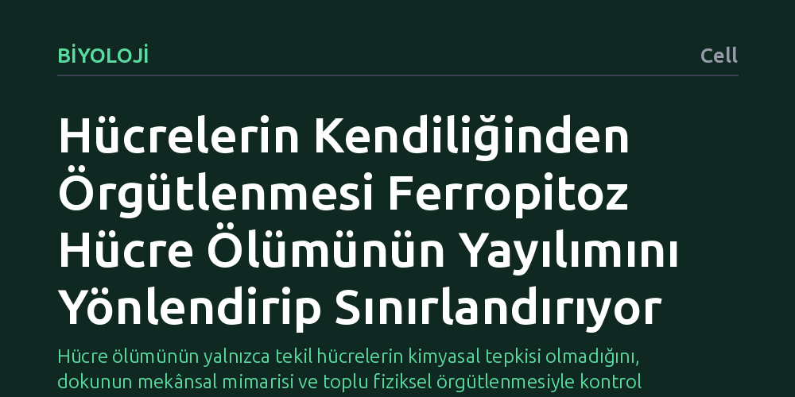

BIYOLOJI · Cell · 2026-10-18
Hücre topluluklarının demire bağlı hücre ölümünün (ferropitoz) yayılımını nasıl kontrol ettiği araştırıldı. Hücrelerin yerel etkileşimlerle kurduğu kendiliğinden örgütlenmenin ve kutuplaşmış yağ düzeninin, normalde sınırsız ilerleyen ölüm dalgasını yönlendirip sınırlandırdığı bulundu.
Hücre ölümünün yalnızca tekil hücrelerin kimyasal tepkisi olmadığını, dokunun mekânsal mimarisi ve toplu fiziksel örgütlenmesiyle kontrol altında tutulabildiğini gösterir.

Vücudumuzdaki hücreler zarar gördüğünde veya işlevini yitirdiğinde belirli programlar dahilinde ölür. Bu ölüm biçimlerinden biri olan ferropitoz, demir bağımlı kimyasal tepkimelerle hücre zarındaki yağların kontrolsüz biçimde oksitlenmesi sonucu tetiklenir. Ancak ferropitozun en tehlikeli yönlerinden biri, tıpkı kuru bir otta başlayan kıvılcım gibi komşu hücrelere sıçrayarak doku içinde sınırsız bir ölüm dalgasına dönüşebilmesidir.
Normal koşullarda bu tür bir biyokimyasal zincirleme tepkimenin her yöne eşit biçimde yayılarak tüm dokuyu yok etmesi beklenir. Bilim insanlarının uzun süredir yanıt aradığı temel soru şuydu: Hücre toplulukları, aksi halde sınır tanımadan ilerleyecek bu yıkıcı ölüm dalgasını kendi içlerinde nasıl dizginliyor ve yönlendiriyor? Bu sorunun yanıtı, dokuların hayatta kalma stratejilerini ve hücresel düzeydeki kolektif savunma mekanizmalarını anlamak açısından kritik bir önem taşır.
Araştırmacılar bu soruyu aydınlatmak için tekil hücrelerin kimyasal tepkilerini incelemek yerine, bir arada yaşayan hücre popülasyonlarının toplu davranışlarına odaklandılar. Hücrelerin birbirleriyle kurdukları yerel temasların doku genelinde nasıl mekânsal örüntüler doğurduğu, mikroskobik ve biyokimyasal yöntemlerle mercek altına alındı.
Çalışmada özellikle hücre zarını oluşturan lipidlerin (yağların) hücre içindeki düzeni ve kutuplaşması takip edildi. Biyofiziksel ölçümler ve mekânsal analiz teknikleri kullanılarak, ölüm sinyalinin doku içindeki geometrik ilerleyişi gözlemlendi ve hücreler arasındaki mekanik-biyokimyasal etkileşimlerin bu yayılıma olan etkisi analiz edildi.
Elde edilen bulgular, hücrelerin pasif kurbanlar olmadığını; aralarındaki yerel etkileşimler sayesinde kendiliğinden organize olarak belirli desenler oluşturduğunu gösterdi. Bu desenler içinde bazı hücre grupları ferropitoza karşı yüksek duyarlılık kazanırken, diğer komşu gruplar dirence sahip bir kimliğe bürünüyordu.
Dahası, hücrelerin içindeki lipid yapısının rastgele dağılmadığı, belirli bir eksene göre kutuplaştığı saptandı. Birbirine bağlı bu biyokimyasal ve biyofiziksel özellikler, normalde küresel ve sınırsız şekilde yayılacak olan ölüm dalgasını belirli bir doğrultuya yönlendiriyor; dalganın önünü keserek onu belirli bir alana hapsediyordu. Böylece ölüm süreci dokunun tamamını yutmadan sınırlandırılıyordu.
Bu sonuçlar, hücre kaderinin yalnızca hücrenin kendi içindeki genetik veya moleküler anahtarlarla belirlenmediğini, doku mimarisi ve komşuluk ilişkilerinin de en az onlar kadar belirleyici olduğunu ortaya koyuyor. Bireysel olarak ölümcül bir tehdide açık olan hücreler, kolektif bir mimari kurarak dalganın yayılım yolunu değiştirebiliyor.
Bu sistem düzeyindeki düzenleme, doku hasarlarında hücre kaybının neden sınırlı kaldığını veya tümörlerin tedaviye direnç gösterirken bu tür koruyucu bariyerleri nasıl kullanabileceğini anlamak için yeni bir bakış açısı sunuyor. Hücre ölümünü salt kimyasal bir reaksiyon değil, fiziksel bir dalga hareketi ve mekânsal bir örgütlenme problemi olarak ele almak, doku biyolojisi araştırmalarına sağlam bir temel kazandırıyor.